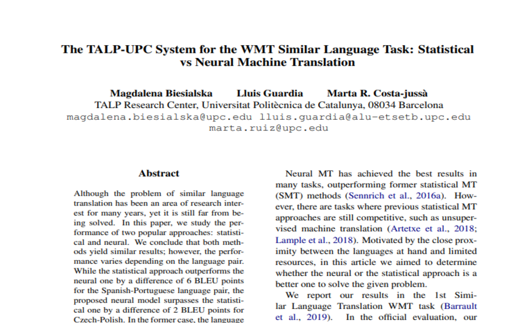

Master student at the Universitat Politècnica de Catalunya (UPC) and a member of the Language and Speech Technologies and Applications (TALP) research group. I'm interested in Deep Learning and Machine Learning in general, although lately I've been more focused on Neural Machine Translation (NMT). Other interests are Full-Stack/Software Development.
Experience
Researcher Intern
Telefonica I+D
Investigation internship in a NLU setting in Python with tasks on intents, domains and NER in AURA project. Implementation of a Chatbot with the custom pipeline with RASA.
Filmnder is a web which allows you and your partner to evaluate individually the top ranked 1800ish films from IMDB in terms of interest in watching them. Then a "tinder-like" match appears when you two coincide in one of the films. It also include the options to see the films you and your partner have "match", the films you are interested in and your partner is not and to change your given score afterwards.
The database used is the one from the Kaggle IMDb movies extensive dataset.
I tried to implement a Transformer model, the state of the art for NLP and many other tasks, in order to learn better how it works. To do so, I designed a simple task such as to fill the blank word in a sentence (the language selected was Spanish).To do so I implemented a Colab notebook with everything, using fewer sentences despite knowing that it will obtain worse results to make it work more quickly and assure it works. Then I adapted it into a python file which ran with more sentences and tries to obtain better results.
The Transformer implementation was based on the one from Samuel Lynn-Evans in his blog.
The results obtained on the test set using Cross Entropy Loss and the Newscarl dataset were of 1.61 and 1.92 for the simplified version and the more complex version, respectively. And of 0.66 with the complex version but using the Europarl dataset.
"Aoccdrnig to a rscheearch at Cmabrigde Uinervtisy, it deosn't mttaer in waht oredr the ltteers in a wrod are, the olny iprmoetnt tihng is taht the frist and lsat ltteer be at the rghit pclae. The rset can be a toatl mses and you can sitll raed it wouthit porbelm. Tihs is bcuseae the huamn mnid deos not raed ervey lteter by istlef, but the wrod as a wlohe."
Since 2003, this sentence has been circulating on the internet. However, it seems that there never was a Cambridge research about it, but the general public has been debating for some time on the reason behind why we can read that particular jumbled text.
Starting from this premise, I created and deployed model using Pytorch, SageMaker and a Jupyter Notebook that tries to reconstruct the original sentence from the jumbled letter of the words, maintaining the same first and last letter of each word for the final project of the Machine Learning Engineer Nanodegree at Udacity.
For the data I used a subset of 1,499 blogs out of 19,320 on the Blogger Corpus. This model consisted of an LSTM with an encoder-decoder architecture, with a Fully Connected Layer connected to the output. It achieved a performance of 30% of fully correct reconstructed words and 63% of right guessed letters from 20,000 words. An additional simple HTML file was created to implement it on the web.
Programming of a simple Python Package for the Machine Learning Engineer Audacity Nanodegree Program.
It is also uploaded to PYPI, you can download and use it with: pip install number-guesser.
Its functionality is to help play the game where someone guesses a number and the others have to get it right, with the feedback available being only responses as too high or too low.
Programming of an executable using Python and Tkinter which can store and retrieve passwords.
The program uses two files: the user information, and the passwords.
In order to be secure, hash codification has been applied for the principal password (which is stored on the users' file), and so it will not possible to be retrieved. Also, symmetric codification using keys are applied to all the passwords stored in the passwords file, so they can be retrieved and shown again in the program itself.
In a group of two people, we developed the project which goal was to build some of the core components of a spreadsheet in Java as an Object-Oriented Application, which can be used through a textual interface. This project included the Requirements List, the Use Cases, a Conceptual Model, the Sequence Diagrams and the code itself.
We developed the code using NetBeans, and the final result included the basic features of any spreadsheet, including:
- Saving and loading the spreadsheet in S2V format.
- Display the spreadsheet.
- Edit the content of a cell of the spreadsheet.
- Cells that efficiently auto-update themselves, if there's some change in one of the depending cells.
- Formulas treated with the Shunting Yard algorithm and postfix evaluation.
- A syntax checker for the formulas written.
- A formula Calculator.
- Formulas could include, numbers, cells, operations, range of cells, functions (MIN, MEAN, MAX, SUM).
Among others.
This project is a personal project which I made in order to learn how create a server and client side website, deploy it, connect to a database and connect different users.
This project consists in a set of multiple English Exercices/Games to help learn some vocabulary online. It includes a login system, 6 units and 10 different exercice as such as word search puzzle or crossword for each unit. It also includes for an specific exercice, as it's needed, a RESTFUL wervice to play with other users.
As an extra, it includes some files which process an excel file to obtain the variables as jsons and update them into the MongoDB database.
Development of a Deep Learning Neural Network using Keras & Python. The network tries to classify people by photos of their ears using a fine-tuned architecture. It consists of 3 parts:
Train model: Where the model(s) are trained and obtained its metrics
Loading the models already trained: Where the models already trained are compared between them.
Try with your photos: Where it's possible to check for an unseen photo of one of the classes of the database.
Developed with the EAR VN1.0 database with a variety of different classes up to 164. It achieves an accuracy of 70% for the maximum of 164 classes.
The TALP-UPC System for the WMT Similar Language Task: Statistical vs Neural Machine Translation
Jan-Jun 2019

Description:
Creation of an ES-PT statistic automatic translation system, 2nd at the WMT Similar Language Translation first task evaluation. As well as the subsequent study and comparison of the results obtained with both neural and statistic automatic translation systems.
We created a culinary chatbot for telegram as part of the Advanced Engineering Project. This chatbot, from a set of ingredients (sent to it in form of text or images), recommends what recipes can be done with them.
At the beginning we got an initial version of the chatbot from the previous project. This version had implemented some chatbot functionality and made calls to two different REST API's. Spoonacular, to get recipes from a set of ingredients and Amazon Rekognition, to label the images sent by the users.
The biggest differentiations from the previous version are:
1. Be independent from any external REST API. That meant, we had to implement our own neural network to recognize ingredients and also, in order to be independent from Spoonacular, we had to model a Recipe, get the data, save it as SQL and implement the full API for this database in order to be able to use it.
2. Create a user profile where we can have information about individuals. With this we accomplished to know better our customer and based on his diet, recommend only recipes that fit him. We also added a ranking system by which the recipes could get an overall ranking and the users could save recipes as 'favorite'.
To recommend a recipe by its ingredients, we implemented an algorithm that classified the recipes by its ingredients, measuring how well those ingredients 'fitted' with the searched ones. We also implemented a histogram based algorithm to recommend a recipe knowing which were the last recipes the user had searched and which rank he had rated them with.
The chatbot could be used from december 2018 to february 2019 at @culinary_chatbot on Telegram
 Matlab
Matlab Pytorch
Pytorch SageMaker
SageMaker Google Colab
Google Colab Jupyter Notebook
Jupyter Notebook P5js
P5js Socket.io
Socket.io Keras
Keras Tensorflow
Tensorflow Telegram
Telegram